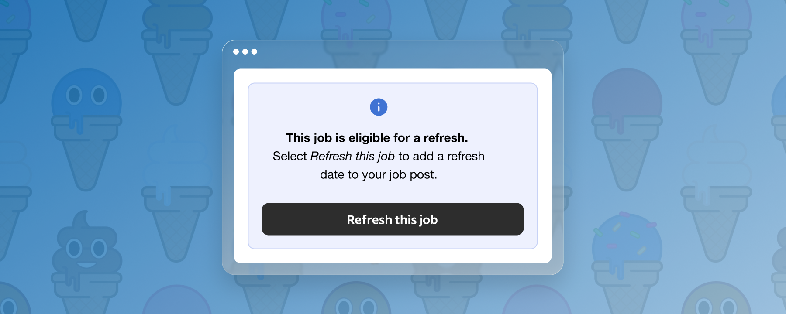
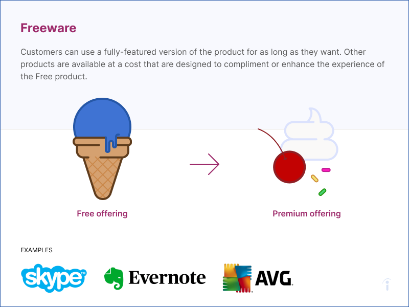
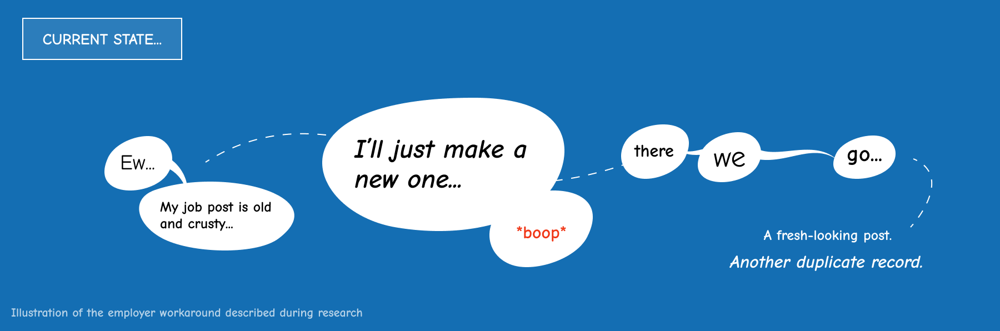

Indeed · Indeed Job Refresh
The job was still open. Its visibility had faded.
Employers recreated jobs to make them look active again. I connected that research finding to a platform initiative and proposed Refresh: support the behavior employers wanted while giving job seekers more current information.

- Role
- Senior UX Designer
- Scope
- User testing, cross-team proposal, information architecture, interaction design, messaging, and prototypes
- Delivery status
- Available on free posts for six months, then included in Sponsored Jobs
- Outcome
- Employers reported less time and effort than closing and reposting
I — Inspiration
Meet free expectations. Make paid value worth choosing.
I kicked off the work with a freemium strategy that paired two goals: give employers a free offering that met their expectations, and create a natural path to a paid offering. The question was which capabilities employers expected as part of the core experience and which offered enough additional value to consider paying for.
My strategy summary proposed an inventory of Indeed’s features and a Kano-based approach to categorizing employer expectations. That framed the research plan; the opportunity for Refresh emerged through the prototyping and employer conversations that followed.
I also created an illustrated deck comparing seven freemium models: premium features, access for more users, paid removal of friction, complementary products, alternative products, ecosystems, and network effects. A shared ice-cream metaphor made the differences concrete. These were strategy references, distinct from the three Indeed directions we prototyped.
We leaned toward the Freeware approach: offer feature add-ons to the core product. That gave the exploration a direction—look for additional capabilities employers would value alongside the free experience.

When an employer first posted a job, the promise of more visibility could be hard to sell. In the product context we were working with, new posts initially appeared on the first page. Many employers said their free posts already produced too many applicants. The Monetization team wanted to increase Sponsored Jobs adoption, but the posting flow was a delicate place to introduce another decision.
I worked with my product owner and lead engineer on three monetization strategies to test. We followed a thread exploring how to add value to Sponsored Jobs, primarily through UI enhancements, advanced filtering, and application management. The opportunity was to connect the paid offering to useful work after a job had been posted.
D — Design Process
Duplicate jobs kept coming up without prompting
I was actively prototyping and testing applicant search, filtering, and management concepts with employers. During that exploration, the team paused to consider whether the tools could introduce new hiring biases and unfairly affect job seekers.
A different theme repeatedly surfaced in those sessions without prompting: job duplication. Employers were closing stale posts and recreating the same job to regain visibility. I brought that insight back to my team and learned that a separate, high-priority initiative was already looking for ways to reduce duplicate jobs.
Duplication affected the whole marketplace. Job seekers applied to stale posts that employers were no longer attending to. Some employers recreated expired jobs to avoid paying for sponsorship. Duplicate records also confounded reporting. Refresh could connect employer demand for renewed visibility to better-maintained job information.

E — Engagement
Change the behavior that created duplicate jobs
I connected with the engineers working on the separate duplicate-reduction initiative. They were exploring a technical solution to identify and de-duplicate posts, but identifying true duplicates was difficult. Archiving or merging jobs that were actually distinct was a risk we could not take.
I proposed addressing the behavior that produced duplicates: employers wanted their job to look new and active to job seekers. Giving them a way to refresh the existing post could serve that need while preserving the job record. It offered another approach alongside the technical work.
I wrote a proposal deck for my team to collaborate on a solution: offer job-post refreshes on a trial basis, then fold the feature into Sponsored Jobs. The proposal connected employer value, the platform’s data problem, and fresher information signaling that an employer was still actively reviewing applications.
I partnered with my product owner and lead engineer on the work and owned stakeholder alignment for the Refresh design. My role extended from testing concepts to identifying the shared opportunity and proposing how the teams could pursue it.
Two ways to address the same platform problem
Separate engineering initiative
Identify duplicates after posting
Detect records that represent the same job.
- True duplicates were difficult to identify.
- Distinct jobs could not safely be archived or merged.
My Refresh proposal
Change the behavior before duplication
Let employers renew an existing post through meaningful updates.
- Support the intent behind recreating a job.
- Preserve the existing record and improve its information.
A — Action
Keep the job. Improve the information.
For Job Refresh, I owned information architecture, interaction design, messaging, prototyping, and stakeholder alignment. The flow needed to make its proposition understandable: update a stale job with meaningful information rather than close it and start again.
Refresh required substantial, recent updates, such as compensation, job-description details, or company information. Renewed visibility had to be connected to more current information. Resurfacing an unchanged listing would have left job seekers with the same potentially outdated description.
I partnered with my product owner and lead engineer throughout the work. I owned the design and alignment, with implementation and rollout carried by the wider team.
From trial to Sponsored Jobs
- Six-month free trialAvailable to a segment of free job posts; employers reported less time and effort.
- Sponsored Jobs featureRefresh became part of the paid offering after the trial.
S — Success
A benefit employers had already been seeking
The team made Refresh available to a segment of free job posts. Employers gave positive feedback that it saved time and effort compared with closing and reposting. It remained free for six months, then became a Sponsored Jobs feature.
Employer feedback was qualitative. Revenue lift, paid adoption, changes in duplicate-job volume, and job-seeker outcomes are not quantified in this account. The applicant-management tools remained prototype exploration in this story.
My takeaway is to investigate the intent behind a workaround. Employers wanted their jobs to look active; duplication was one way they pursued that goal. Connecting that intent to another team’s constraints let me propose a product path that supported the desired behavior at its source.